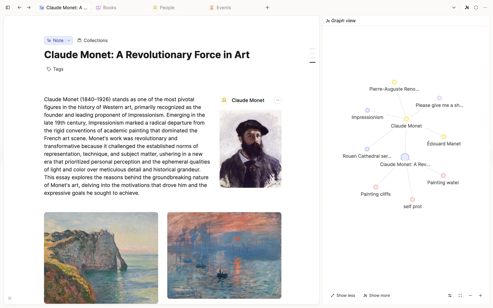
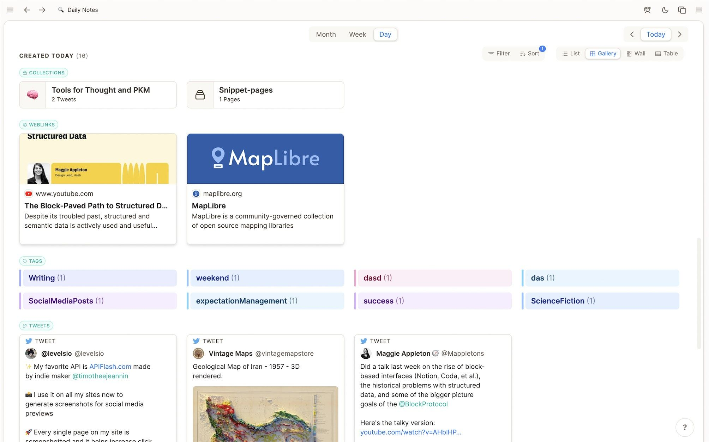
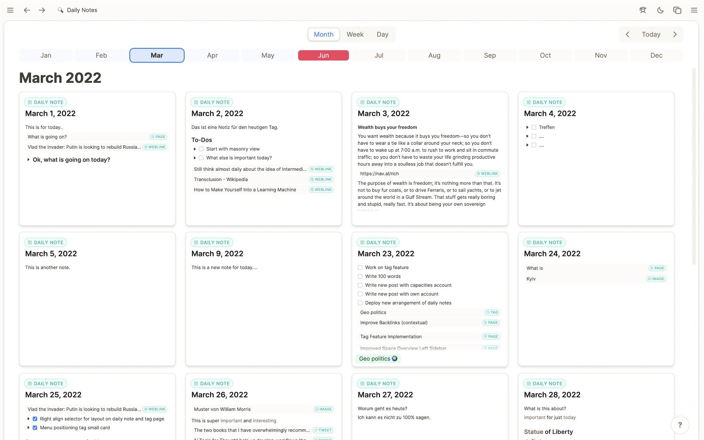
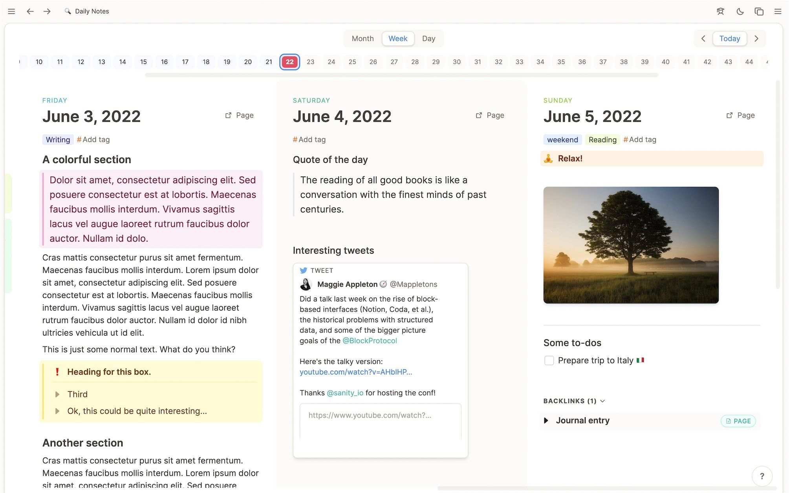
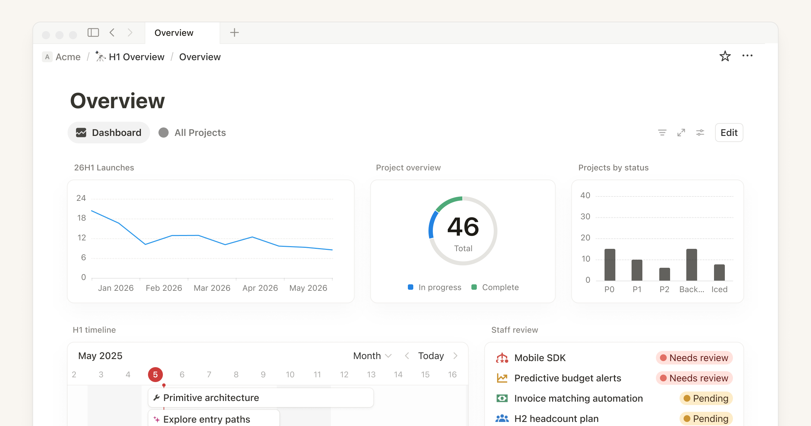
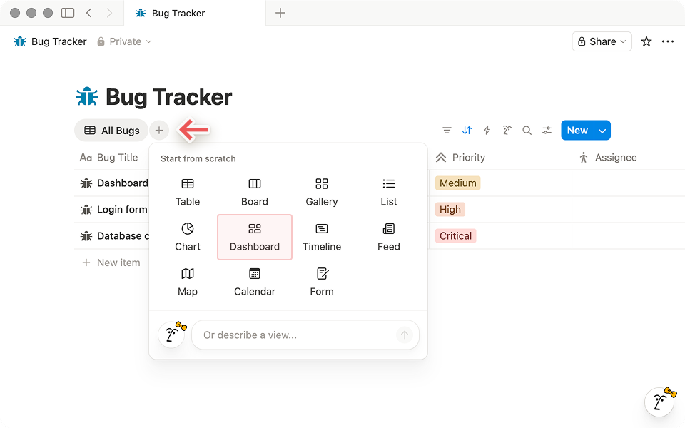
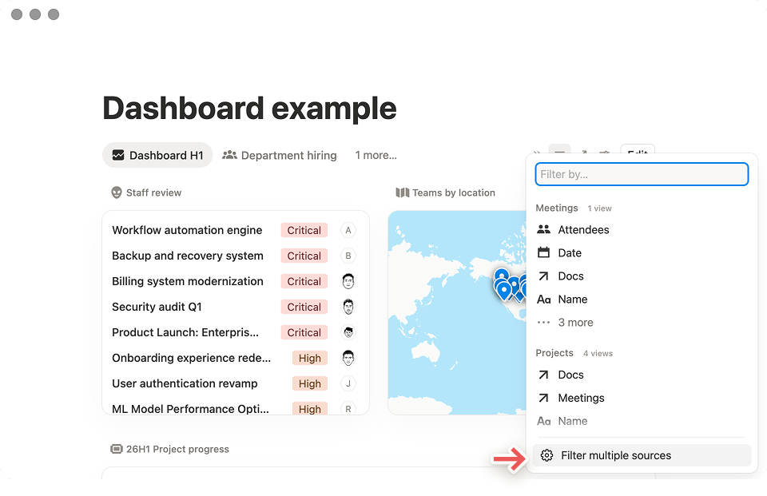

각 항목은 아래 Findings의 증거에 직접 연결된다. 우선순위 순.
Notion이 검증한 치수를 그대로 빌려 시작 비용을 줄여라. 사이드바 너비 224px, 아이콘 컨테이너 22px 정사각, 검색바 30px 높이, 8px 그리드, 8px 라운드 — Notion의 6년치 실험 결과다. 상단 4개 키 슬롯(Search · AI · Home · Inbox)을 132px 영역에 묶고, 그 아래 타입 트리 / 컬렉션 / 즐겨찾기를 배치한다. Capacities처럼 타입 컬러 인디케이터(좌측 1px 보더)를 노출해 비개발자·시각 학습자에게 SoT 구조를 무의식적으로 학습시켜라.
┌──────────────────────────────────────────────────────────────────────┐
│ [Y] 요한 OS ⌘K ☼ ◐ │
├────────────┬───────────────────────────────────┬────────────────────┤
│ 🔎 Search │ 데일리 노트 — 2026-05-06 (수) │ ◯◯◯ Graph │
│ ✨ AI │ │ (this note) │
│ 🏠 Home │ # 오늘의 메모 │ ╭──────────────╮ │
│ ✉ Inbox │ ... │ │ •●● │ │
│ ───────── │ │ │ ● ● │ │
│ TYPES │ ## 연결 │ │ ● ● │ │
│ │ Note │ ▸ ADR-2026-05 │ ╰──────────────╯ │
│ │ ADR │ ▸ Insight: MCP Ch.15 │ │
│ │ Insight │ │ ⤴ Backlinks (3) │
│ │ Person │ │ ▸ ADR-2026-04 │
│ ───────── │ │ ▸ Curriculum log │
│ ⭐ Pinned │ │ │
│ ▾ today │ │ ◧ Meta │
│ ▾ active │ │ type: daily-note │
└────────────┴────────────────────────────────────┴────────────────────┘
224 px flex ~320 pxNotion의 12-위젯 대시보드는 멀티 프로젝트 요약에는 좋지만 개인 PKM에는 너무 비즈니스-같다. 너의 SoT는 타입(Note / ADR / Insight / Person / Source)별로 묶어 보여주는 게 정체성이다. Capacities의 데일리노트 "Created Today (16)" 스크린이 정확히 그 패턴 — 수평 섹션 + 갤러리/리스트/월/테이블 토글.
┌─ Home ───────────────────────────────────────────────────────────────┐
│ Today ─ 6 items [Filter ▾] │
│ ┌──────────┐ ┌──────────┐ ┌──────────┐ ┌──────────┐ │
│ │ ADR ● │ │ INSIGHT●│ │ NOTE ● │ │ PERSON ● │ │
│ │ session │ │ MCP15 │ │ daily │ │ +2 more │ │
│ └──────────┘ └──────────┘ └──────────┘ └──────────┘ │
│ │
│ Recent ── by type [Type ▾] │
│ ╭─ ADR ─────╮ ╭─ Insight ─╮ ╭─ Note ────╮ ╭─ Source ─╮ │
│ │ 1) sync │ │ 1) ch15 │ │ 1) today │ │ 1) curr │ │
│ │ 2) records│ │ 2) ch14 │ │ 2) yest │ │ 2) gh-rt │ │
│ ╰───────────╯ ╰───────────╯ ╰───────────╯ ╰──────────╯ │
│ │
│ ╭─ Graph (this week) ───────────╮ ╭─ Quick capture ─────────╮ │
│ │ ●● ● │ │ + 빠른 메모... │ │
│ │ ●● ●● │ │ │ │
│ │ ● ●● │ │ [type ▾] [submit ⏎] │ │
│ ╰───────────────────────────────╯ ╰──────────────────────────╯ │
└──────────────────────────────────────────────────────────────────────┘Linear / Notion / Raycast / Vercel — 모든 모던 SaaS의 표준이다. 키보드 중심 사용자에겐 사이드바보다 빠르고, 시각 학습자에게도 "이 앱에서 뭘 할 수 있는지" 디스커버리가 된다. 너의 컨텍스트에서 의미 있는 슬래시 명령:
| Command | Action |
|---|---|
/jump <title> | 노드 즉시 이동 (퍼지 검색) |
/new note | adr | insight | 타입 지정 생성 |
/tag <name> | 태그 검색·필터 |
/recent | 최근 N개 |
/graph this | week | type:X | 그래프 뷰 진입 |
/sync notion | 미러 채널 푸시 |
/run <hook> | 자동화 실행 |
Cmd+K를 사이드바보다 먼저 만들어라 — 개발 단계에선 사이드바 메뉴 30개 그리는 것보다 팔레트 하나로 진입점을 통일하는 게 압도적으로 빠르다.
Obsidian / Tana / Anytype 비교 분석의 결론: 그래프의 가치는 "포스 디렉티드 헤어볼"이 아니라 "필터된 클러스터"다. 너의 SoT 그래프는 처음부터:
Obsidian의 풀스크린 그래프는 "감탄용", 너의 그래프는 항상 우측 사이드 320px에 살아있어야 — 이게 비개발자에게 "지식이 연결되고 있다"는 피드백을 매 클릭마다 주는 핵심 장치.
Capacities의 가장 강한 차별점은 데일리 노트가 단순한 일기가 아니라 그날의 모든 SoT 진입을 모으는 허브라는 점이다. Week/Month/Day 토글, 월 그리드(작은 카드 28개), 타임라인 — 이 패턴은 "오늘 뭐 했지?"라는 질문에 SoT가 직접 답하게 한다.
Month View (28일 그리드 — Capacities 패턴)
┌─────┬─────┬─────┬─────┬─────┬─────┬─────┐
│ M 1 │ M 2 │ M 3 │ M 4 │ M 5 │ M 6 │ M 7 │
│ ●●● │ ●● │ ●●●●│ ● │ ●●● │ │ ●● │
│ adr │ ins │ note│ note│ adr │ │ note│
├─────┼─────┼─────┼─────┼─────┼─────┼─────┤
│ M 8 │ M 9 │ ... │ │ │ │ │각 카드는 그날 생성된 SoT 객체 카운트를 도트로 표시 (타입별 색). 클릭 → 그날의 데일리 노트로 진입.
리서치 메타 분석 결론: 75개 연구 중 46.7%가 정보 과부하를 가장 큰 대시보드 문제로 지목했다. 너의 "정보 밀도 높지만 읽기 부담 적은" 목표를 달성하려면:
각 이미지는 위 권장사항의 직접 증거. 출처 라벨 [Web]은 공식 사이트에서 가져왔음을 표시.







리서치한 7개 제품 모두가 공유하는 "테이블 스테이크":
이 항목들은 "차별화 포인트"가 아니다. 빠지면 사용자가 "어, 이거 뭐가 빠졌네"를 느낀다.
리서치하다 "오, 이거"라고 멈췄던 디테일들 — 베끼지 말고 변형해서 가져갈 후보:
+@person +#tag 같은 단축 링크로 확장 가능.도서관형 vs 워크스페이스형. Notion은 워크스페이스형(임의 트리, 페이지 안에 페이지) — 자유도는 높지만 50+ 페이지에서 길을 잃는다. Obsidian은 폴더 기반 — 단단하지만 시각적 학습자에 차갑다. Capacities·Anytype은 타입형(객체 = 타입의 인스턴스) — 너의 SoT 메타 구조와 정확히 매핑된다. 추천: 타입을 1차 IA, 폴더(컬렉션)를 보조 IA로.
UI Breakdown of Notion's Sidebar가 측정한 값:
| 요소 | 값 |
|---|---|
| 사이드바 너비 | 224px 고정 |
| 메인 네비게이션 영역 높이 | 131px (Search / AI / Home / Inbox) |
| 아이콘 컨테이너 | 22px 정사각 |
| 검색바 높이 | 30px |
| 섹션 간 갭 | 6px |
| 라운드 | 8px |
| 그리드 베이스 | 8px |
이건 6년치 사용자 테스트의 결과물이다 — 처음부터 다른 숫자를 쓸 이유가 없다. 너의 한국어 글꼴(Pretendard 등) 라인 하이트만 점검.
Obsidian·Tana·Anytype 그래프 비교 결론: 풀 그래프는 300+ 노드에서 무용지물. 해결책 3가지:
너의 우측 사이드 320px 미니 그래프는 자연스럽게 (1)+(2) 조합이 된다 — 사이즈가 작으니 풀 그래프 안 보여줘도 됨. 풀 그래프는 /graph 명령으로 별도 페이지.
Linear: "Pressing C creates an issue, L opens labels, S changes status, and Cmd+K opens a command palette that can reach any function."
핵심은 Cmd+K 하나만 외워도 모든 기능에 도달할 수 있다는 점. 사이드바는 발견·시각적 위치감, 팔레트는 속도. 둘 다 필요하지만 개발 우선순위는 팔레트가 먼저다 (사이드바는 정적 라우팅, 팔레트는 다이나믹).
UXPilot의 75개 연구 메타 분석: 정보 과부하가 46.7% 사용자에게 가장 큰 문제. 원인은 과도한 데이터 밀도, 빈약한 시각 계층, 컨텍스트 필터 부재. 해결: 점진적 노출, F/Z 스캔 패턴, 컨셉트 그룹화, 청크 단위 표시.
너의 "정보 밀도 높지만 읽기 부담 적은" 목표는 모순이 아니라 "체계적 밀도"의 문제 — 정보가 많아도 그룹·계층이 명확하면 부담은 낮다. Notion 사이드바가 6px 갭 + 8px 그리드로 그걸 한다.